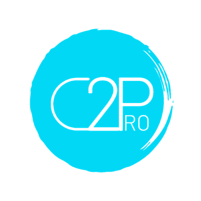
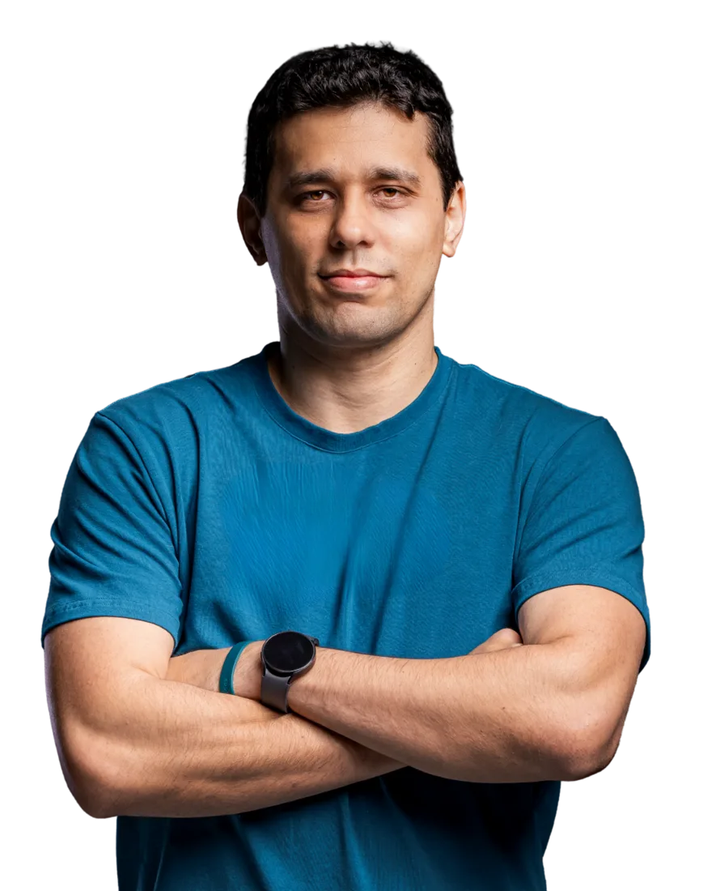
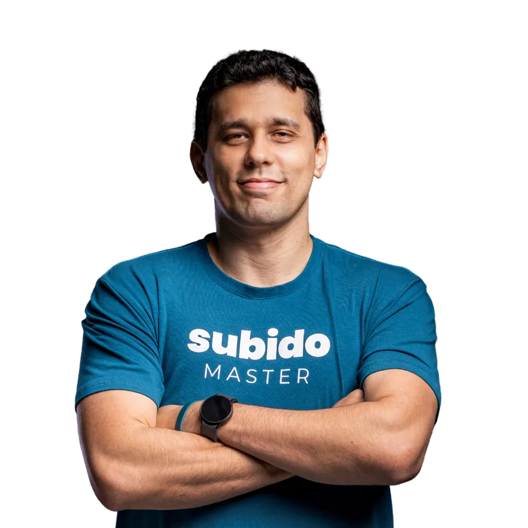

Universo Subido + Viver de IA
Dobre seus lucros com IA
Pitch C2ProCarlos Primo

C2Pro
C2Pro
Esse é o teto do meu lucro.
Drive e ClickUp do cliente criados sozinhos
Novos, a partir dos que mais convertem
Sobem no padrão, sem retrabalho
Vendas e planejamento ao vivo pro cliente
Economiza tempo. Não gera receita nova.
Qual produto primeiro
Quanto cobrar
Entregar sem depender de mim
